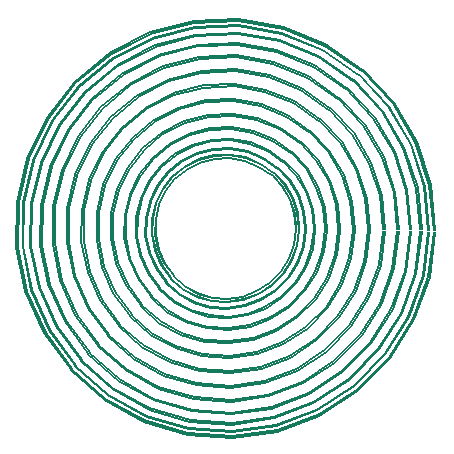
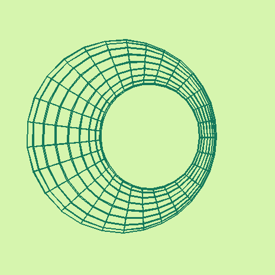
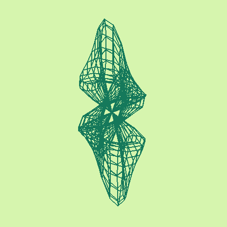
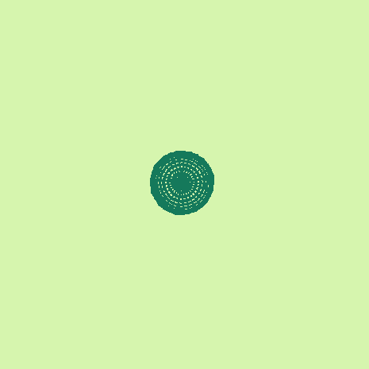
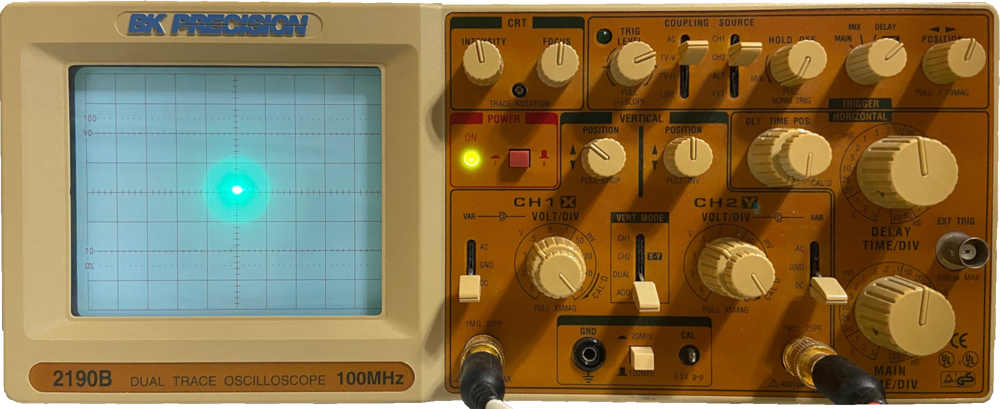

Oscilloscopes and Surfaces
8 / 17 / 21
Hello again! It's been about a month since I wrote my last article since I've been spending a lot of time finishing up my summer REU and leaving for vacation. Hopefully I can make up for the missed week with an extra cool topic today! There are really two distinct topics I'd like to talk about: oscilloscopes and how they work and surfaces and a useful way to describe them mathematically.
Let's start with surfaces:
Surfaces
As defined by Pressley in Elementary Differential Geometry, a surface is a subset of such that each point has an open and open for which and is homeomorphic to . This homeomorphism is called a surface patch of and is usually denoted . A collection of surface patches whose images collectively cover is called an atlas.
In some sense, we can think of surface patches as taking some flat piece of paper and continuously bending it onto a part of our surface. Several of these pieces of these can be combined to sort of 'paper mache' our surface. If you ever have an evening to spare, it was a lot of fun looking through all of these surfaces to find my favorites. A few I particularly liked were the gyroid and saddle tower.
Many of these surfaces were describable with only a single surface patch, which is pretty useful when trying to write a simple program to visualize them. Since each surface has only a single piece of to worry about, we can sample this domain and create a finite set of curves to approximate the shape of our surface. Orthographically projecting these sampled points onto a viewing plane and drawing lines between them gives us a nice visual of what the curve looks like.
Here's an example:

The torus can be described by on the domain
.
In this example, we are sampling 30 curves with different ,
each with 30 different values.
Although this is nice, it would be even better to get different viewing angles of our surface. This is easy to add, since we can simply multiply each of our sampled points by the 3x3 rotation matrix , , or for some small . By binding these rotations to the arrow keys, we get some nice control over our viewing angle. Another quick improvement is to sample both curves which vary in and curves which vary in to give a more 3-dimensional feel to the figure.

The same torus as before but with perpendicular curves included and arrow keys to control rotation.
From here, we can nicely visualize any surface we'd like under the condition that the surface can is covered by only one surface patch. These isn't particularly limiting though since there are tons of unique surfaces which meet this requirement.

Dupin Cyclide

Trefoil Knot

Dini's Surface
Oscilloscopes
An oscilloscope is a piece of equippment used to graphically display variable voltages. Most oscilloscopes have different modes to display either a single signal over time or two signals each controlling a separate coordinate (XY mode). Analog oscilloscopes work by firing a beam of electrons at a fluorescent screen and controlling this beam with a pair of metal plates connected to the desired input signal. The presence of a signal induces an electric field between the plates which deflects the beam either up and down or left to right.

My BK Precision 2190B Analog Oscilloscope
One interesting use of oscilloscopes is there use in producing visual music. That is, a song is produced to intentionally display an image in an oscilloscope by using left and right stereo as the two signals in XY mode. Check out Chris Allen's YouTube for some amazing examples of this.
A program exists for converting .obj files into sounds for use in these songs, but I wanted to write my own version of this which can take surface patches as a direct input. Since I already described a program which projects and plots sampled points from a surface, we only need to generate the correct sound to display this set of points on the oscilloscope. This isn't terribly difficult; we just need to separate the x and y values of the points into separate arrays, upsample the arrays to match the sampling frequency of 48000 (common for audio files), and play back the arrays as a sound through the left and right stereo channels respectively.
This gave some great results! In the videos below I've included a bluetooth speaker so we can listen to the sound and feed it to the oscilloscope at the same time (in the past I've tried using a headphone splitter but this halves the voltage and makes both the audio and signal for the oscilloscope lower quality).
If you have an oscilloscope of your own and would like to try this out yourself, I've included my code in the resources below. I bought my oscilloscope in January 2021 and haven't had the chance to do much with it before this. Look forward to a future article where I'll try making some of my own music with Hansi Raber's OsciStudio!
Resources
- How to Setup Your Oscilloscope
- My Code for Generating Sounds
- My Favorite Oscilloscope Song
- OsciStudio (Software for making Oscilloscope Music)